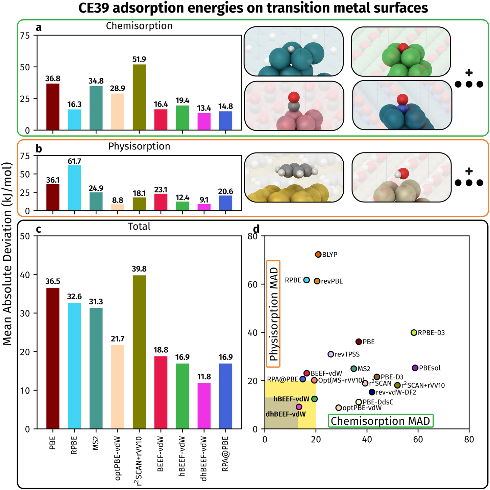
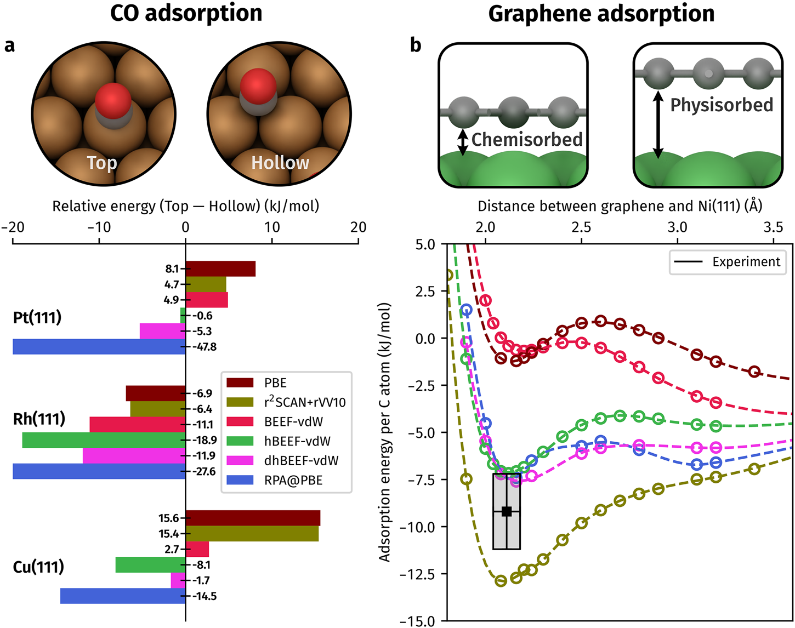
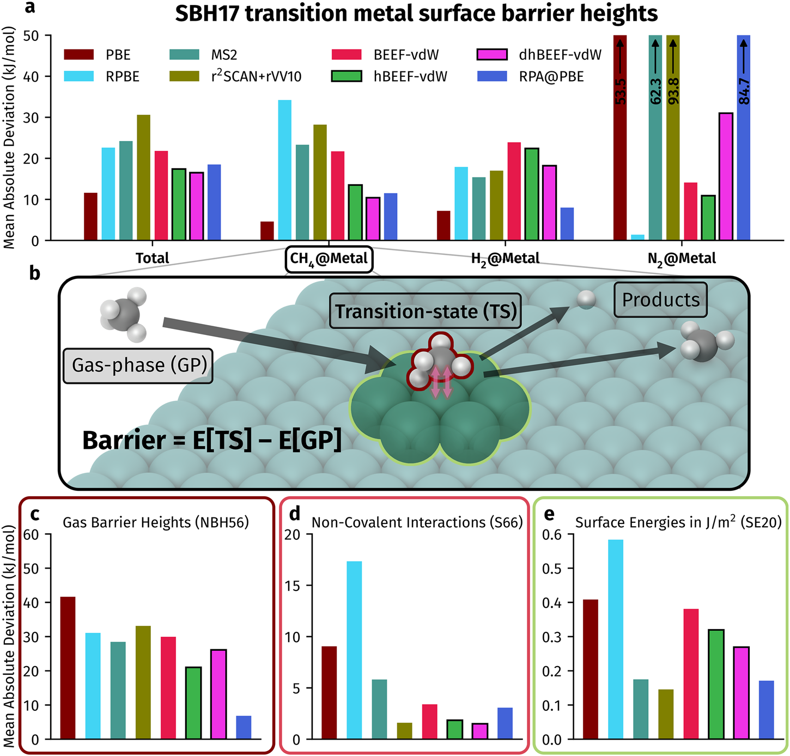

计算催化的密度泛函：保留金属的电子密度，怎样把吸附能算得更准确
论文原文 ↗原文：Benjamin X. Shi、Timothy C. Berkelbach，Practical and accurate density functionals for computational heterogeneous catalysis，npj Computational Materials，2026，DOI：10.1038/s41524-026-02320-6。本文依据本地10页Article in Press版本；独立补充材料未附。
计算金属催化剂时，最常问的是：分子吸附得多牢，在哪个位点最稳定，反应需要跨过多高的势垒？密度泛函理论（DFT）能够计算这些能量，但答案依赖所选的交换—关联近似，也就是通常说的“泛函”。同一种近似可能算好弱吸附，却算坏化学键；也可能平均势垒误差很小，仍把某一类反应算得很差。
这篇论文选择了一条与“换一个更高级泛函重新算到底”不同的路线：先用低成本方法得到适合金属的电子密度和轨道，再固定它们，只对能量做一次更高层级的评价。 作者用这套分工开发了两个新泛函，既改善吸附能，也纠正了CO在Pt表面吸附位置、石墨烯在Ni表面结合状态的定性错误。
一、方法怎样做：把“电子怎样分布”和“能量怎样评价”分开
为什么金属不能照搬分子上的高级方法
表面计算最常用广义梯度近似（GGA）：利用各处电子密度及其空间变化来近似交换—关联能，成本相对低。本文的基础泛函BEEF-vdW属于这一路线，同时带有描述长程范德华作用的非局域关联项，因此能兼顾一部分弱吸附。
杂化泛函进一步加入一部分精确交换，即直接用轨道计算电子交换积分。它在分子和绝缘体中常能改善误差，但金属的导电电子广泛离域，加入交换后的自洽计算会改变这种离域程度，还可能带来收敛困难。“自洽”指电子密度决定有效势，有效势又决定新轨道和密度，如此循环直到前后一致。昂贵的交换计算也就跟着重复几十到上百次。
再高一级的双杂化泛函还加入多电子关联计算。常规分子双杂化多用二阶微扰方法MP2，但金属费米能级附近存在极低能量的电子激发，使其微扰分母趋近于零，关联能可能发散。作者因此没有直接移植分子配方，而是使用两种适合金属的成分：只作用于短距离的屏蔽精确交换，以及能够累加电子云屏蔽响应的随机相位近似（RPA）关联。 短程交换也减轻了周期模型对真空尺寸和晶体积分采样的慢收敛问题。（PDF第1—2、6页）
先生成轨道，再组合能量
新杂化泛函hBEEF-vdW@BEEF-vdW先做常规BEEF-vdW自洽计算，冻结所得轨道，用精确交换替换17.5%的短程交换，保留原有关联项。“@”右边说明轨道来自哪里，左边说明能量如何评价。它只需要在已收敛轨道上计算一次昂贵交换。
新双杂化dhBEEF-vdW@BEEF-vdW则替换25%的短程交换，再以15%的RPA关联替换相应比例的BEEF半局域关联，仍保留完整的非局域范德华项。其中RPA关联另用PBE轨道计算，因为作者发现这一选择比BEEF轨道更好。因此，双杂化有两条能量分支：BEEF轨道承担交换等项，PBE轨道提供RPA关联，最后按固定比例组合。混合比例用39条吸附反应中的7条实验参考拟合。（第2、6页）
以CO吸附在Pt(111)为例，输入是一个周期Pt薄片，以及CO在单个Pt上方的顶位（top）和三个Pt围出的空位（hollow）两种构型。先用BEEF-vdW优化几何、收敛轨道，再分别评价新杂化或双杂化总能。吸附能由“吸附复合体系能量减去干净表面与孤立分子能量”得到；两种吸附构型的总能量之差则决定偏好哪个位点。主计算使用较小的四层薄片，随后借助较便宜的BEEF计算修正层数等有限尺寸影响。这条路线把高级计算集中在固定结构的单点能量上，而不是让它承担整段结构优化。（第6页）
二、主要结果：平均吸附精度、结合状态和反应势垒分别改善了什么
1. 双杂化的吸附收益来自两类结合都比较准确
作者用CE39评测，即39条过渡金属表面吸附反应的实验参考集合，既有形成明显化学键的化学吸附，也有以弱相互作用为主的物理吸附。实验焓经零点能等修正后，与计算电子能比较。图中的平均绝对偏差（MAD）先取每条反应计算值与参考值之差的绝对值，再按生成产物数归一化并平均；柱越低越准确。

图1｜原文Figure 1，PDF第3页。a、b分别比较化学吸附和物理吸附，c汇总CE39；d把两类误差放在横纵轴上，靠近左下角才说明两类结合都描述得好。新双杂化的优势在于均衡，而非只改善其中一类。
BEEF-vdW的整体MAD为18.8 kJ mol⁻¹，新杂化降到16.9，与RPA相同；双杂化进一步降到11.8 kJ mol⁻¹，低于论文采用的13 kJ mol⁻¹“过渡金属化学精度”目标。双杂化的化学吸附与物理吸附误差分别为13.4和9.1；RPA对应为14.8和20.6。相较纯RPA，约5 kJ mol⁻¹的总体收益主要来自弱吸附描述改善。（第2—3页）
这项比较也说明，增加高级成分并非处处有益：新杂化相对BEEF的化学吸附误差略增，整体进步来自物理吸附。双杂化才把两者同时带到较低误差区间。13 kJ mol⁻¹是平均目标，化学吸附子集13.4只是接近它；CE39还包含7条拟合样本，因此11.8是整个集合上的表现。
2. 能量修正能够改变“在哪儿结合、怎样结合”
CO位点谜题是一个比平均误差更直观的问题：实验表明CO在Pt(111)、Rh(111)、Cu(111)上偏好顶位，而常用半局域泛函容易错误地偏好空位。图2a画顶位能量减去空位能量，只有负值才支持实验位点。Pt上BEEF给出+4.9 kJ mol⁻¹，新杂化变为−0.6，双杂化变为−5.3；Cu上两种新方法也恢复正确方向。（第3—4页）

图2｜原文Figure 2，PDF第4页。a的横轴为顶位减空位的相对能量，向左表示顶位更稳定；b的横轴为石墨烯距Ni表面的距离，纵轴为每个碳的吸附能，灰框是实验范围。要比较的是近处化学吸附盆地与远处弱吸附盆地谁更低。
作者对CO的解释涉及两个相反效应。金属电子可以回馈到CO的2π*反键轨道；这个接受电子的轨道若过低，空位的多配位结合容易被过度稳定。精确交换抬高它，减少回馈，有利于顶位。但自洽杂化又会让金属电子更局域，降低作者所说的位阻排斥，重新强化空位结合。固定GGA密度保留前一个能量收益，同时避免后一个密度反馈。这是作者依据正文及补充分析提出的物理解释，直接结果则是主图中的能量排序翻转。（第4页）
石墨烯/Ni(111)检验了另一种竞争：石墨烯既可能远离表面弱吸附，也可能贴近表面形成化学结合。PBE和BEEF的近程结合过弱，偏好远处状态；两种新方法与RPA都恢复了近程状态更稳定的曲线，并给出落在实验误差范围内的结合能和距离。实验参考为每碳−9.2±2.0 kJ mol⁻¹、距离2.11±0.11 Å。方法因而改善的不只是一个数字，还包括不同结合状态之间的选择。（第3—4页）
3. 势垒更均衡，但总体平均仍未超过PBE
SBH17收集了CH₄、H₂、N₂在金属表面解离的17条势垒，参考值来自经分子束实验校准的反应参数DFT。作者沿用既有过渡态几何，比较这些结构相对气相分子与干净表面的能量。

图3｜原文Figure 3，PDF第5页。a先按CH₄、H₂、N₂分组比较误差，避免总平均遮住少数困难反应；b说明表面解离势垒的参考；c—e分别检查气相势垒、气相二聚体非共价作用和金属表面能，帮助判断准确度是否来自偶然抵消。
整体MAD从BEEF的21.8降到杂化17.4、双杂化16.5 kJ mol⁻¹，仍高于PBE的11.6。不过PBE在仅有两条的N₂解离子集上误差达到53.5，RPA甚至达到84.7；两种新方法在不同反应物之间更均衡。总平均被大量CH₄、H₂反应主导，不能代表每类反应同样可靠。（第3—4页）
作者进一步发现，新方法在气相势垒、气相二聚体弱作用和金属表面能上都优于PBE。这支持一种解释：PBE在部分表面势垒上的优势，可能来自气相势垒低估与过渡态表面结合偏弱的相互抵消；新方法的收益则有更均衡的成分描述作支撑。三套诊断是旁证，并未把每条表面势垒逐项分解为可相加的误差。
三、贡献：高级能量评价不必与高级密度自洽绑定
这项工作给周期金属表面提供了一个具体的泛函开发思路：低成本GGA负责生成离域电子结构，屏蔽交换和少量RPA负责提高能量评价层级。两个选择可以分开调节，因而不必为了获得高级交换收益，就同时承担它对金属密度的全部反馈。
成本优势也来自这种分工。新杂化在CE39上平均每体系约900 CPU核小时，约为BEEF的20倍；加入RPA后的双杂化总体约在半局域成本的20—40倍范围内。它们依然昂贵，但避开了反复计算交换的自洽过程，也利用低层级计算做有限尺寸修正，使高级能量可以应用到更大的完整周期模型。（第4—6页）
关键范围：本文最直接验证的是固定几何上的能量评价。表面势垒总体仍未达到13 kJ mol⁻¹目标；吸附参考自身有实验整理不确定度。独立SI未随本地PDF提供，拟合反应名单、详细收敛和轨道分析未逐项读取。主要结论适用于本文测试的金属表面，不涵盖液态电解质、电位依赖或完整复杂反应网络。
附：原始摘要完整中文翻译
密度泛函理论支撑着现代过渡金属表面的原子尺度模拟。它能够预测与催化性能有关的关键性质，例如吸附能和势垒高度，从而为理性催化剂设计开辟新的范式。这些应用需要可靠的密度泛函，使误差低于13 kJ mol⁻¹；这一标准有时被称为过渡金属化学精度，但达到它仍具挑战。我们提出一种非自洽方法，将较高阶泛函的成本降低数个数量级，使其能够用于比相应自洽方法更大、更复杂的金属表面。在此基础上，我们开发了一个新的杂化泛函和一个新的双杂化泛函，它们的准确性优于标准半局域泛函；其中双杂化泛函在39条实验吸附反应上的平均表现达到过渡金属化学精度。此外，两者在17个势垒高度上均表现均衡，并纠正了标准泛函的定性失败，包括CO在Pt(111)上的吸附以及石墨烯在Ni(111)上的吸附。这些泛函可以容易地在现有密度泛函理论程序中实现，我们还提供将其整合到开源高通量工作流中的代码，以促进广泛采用。更一般地，这一框架为改进异相催化和复杂材料的泛函提供了一条系统性路线。